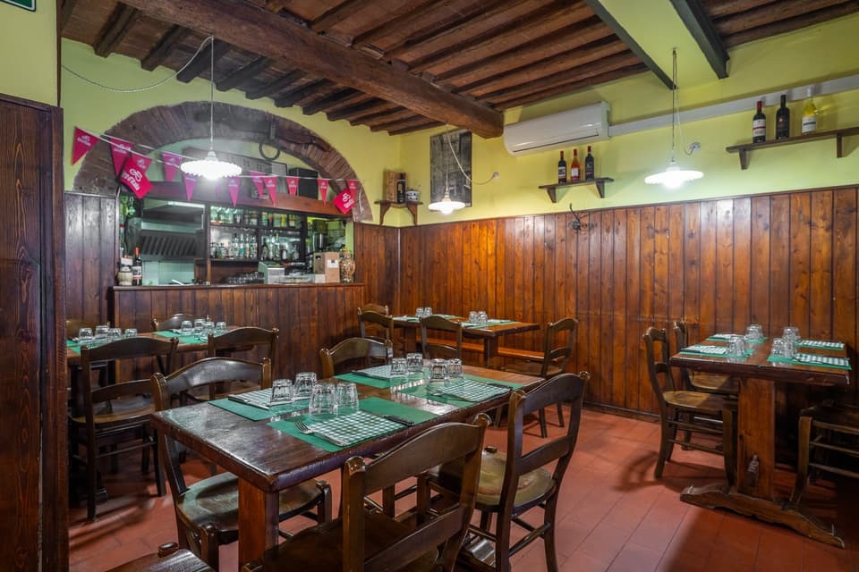
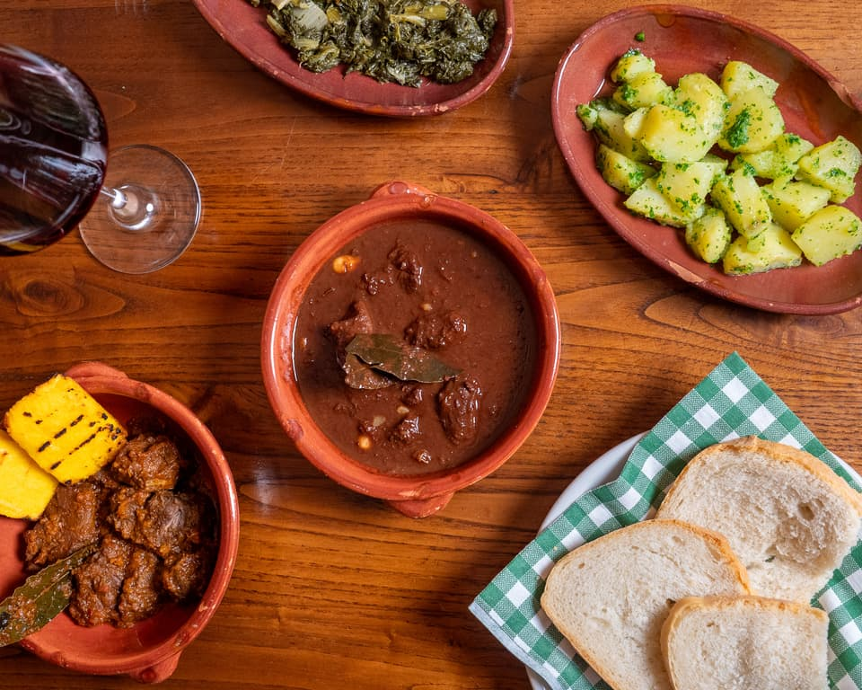
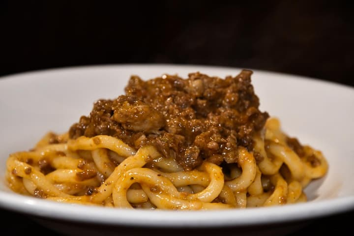
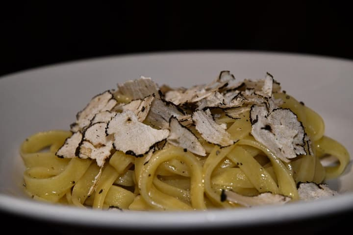
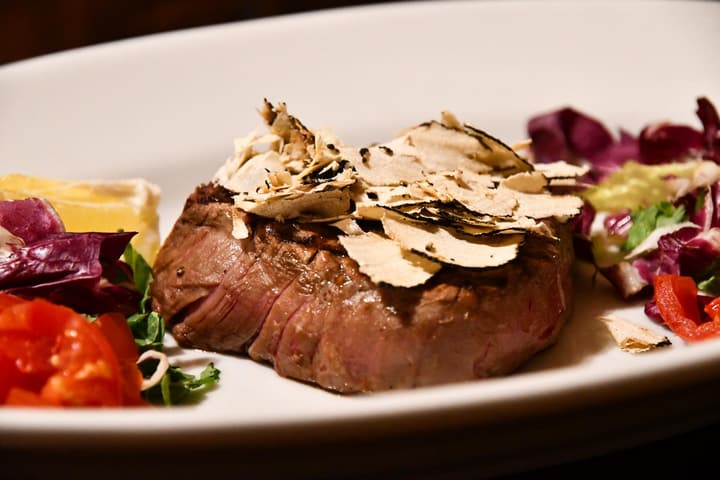
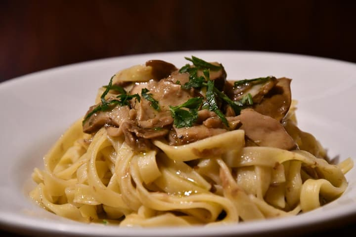
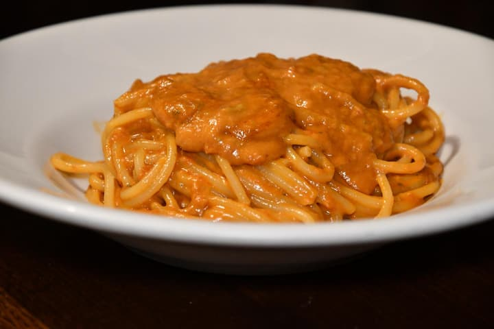
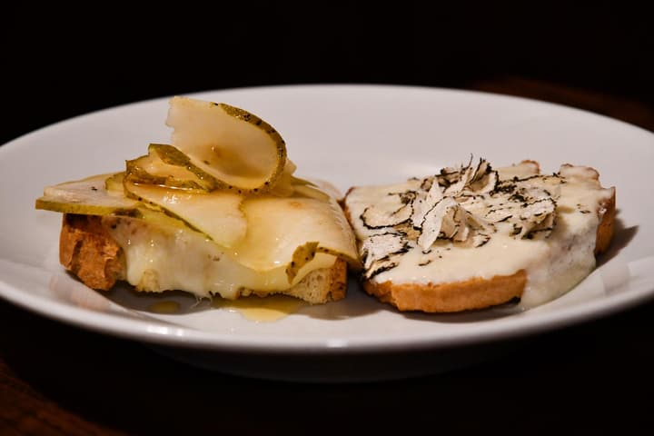
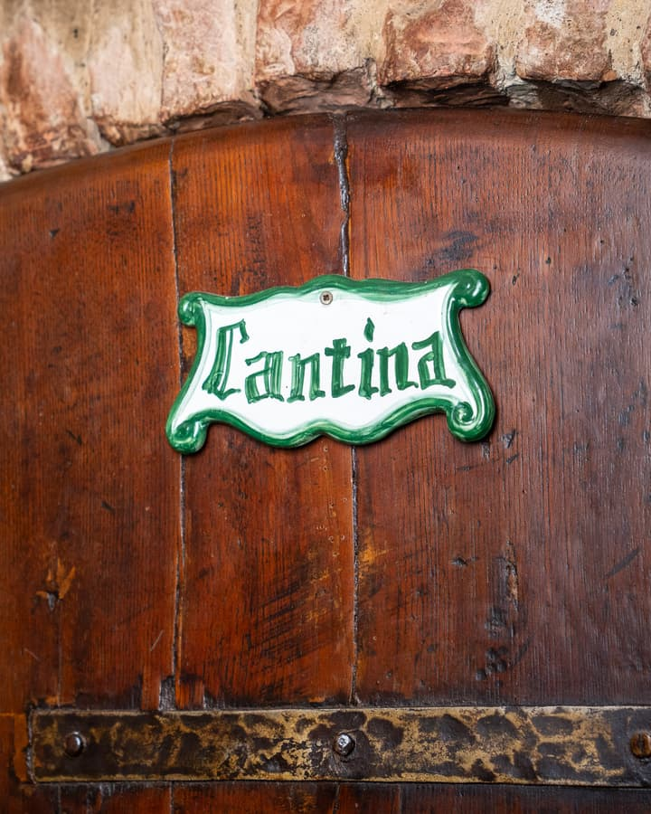

Osteria dei Rossi · Via dei Rossi, Siena
Osteria a Siena dentro le mura
Una tavola apparecchiata per voi, tra travi e lanterne di ferro battuto: pici, cinghiale in dolceforte, tartufo fresco, fiorentina e i vini della cantina.
Da martedì a sabato; domenica solo a pranzo
La storia comincia quiMettetevi comodi: qui si mangia come a casa, con la ciccia buona e il vino giusto.

I · La casa
Qui vi sentite a casa
Osteria dei Rossi è un posto caldo, dove ci si sente a casa. Vi accogliamo con un servizio cordiale, come si accoglie chi entra in casa nostra. Sedetevi, guardatevi intorno, ordinate quello che vi va. Il resto viene da sé.
Sopra di voi le travi, alle pareti il legno, sotto i piedi il cotto. Archi di mattoni, lanterne di ferro battuto, tovaglioli a quadretti verdi e bianchi. Dal bancone si vede la cucina: lì c'è Luca. L'osteria la gestiscono lui e Max.



II · La contrada
Dal 1992 in Contrada del Bruco
L'osteria è nella Contrada del Bruco, che ha una sola porta nelle mura: Porta Ovile. L'ha aperta nel 1992 Giuseppe «Beppe» Carrieri, brucaiolo. Alle pareti, le fotografie della contrada e di Siena: ispirazione, per chi cucina e per chi siede a tavola.
Dall'inizio del 2024 la guidano Luca e Max, con Luca in cucina. Il nome della via viene dal castellare duecentesco della famiglia Rossi: Via dei Rossi scende da Banchi di Sopra a Piazza San Francesco, e la nostra porta è lungo la discesa.
- 1992L'osteria apre in Via dei Rossi
- 2024All'inizio dell'anno Luca e Max ne prendono la guida
- OggiGli Spaghetti alla Chitarra con Sugo dell'Osteria sono ancora in menù, dal 1992
Il Palio si corre il 2 luglio e il 16 agosto.


III · La tavola
Cucina tipica senese con radici medievali
È cucina tipica senese, con radici nel Medioevo. Da noi arriva a tavola nel coccio di terracotta: stufati a cottura lenta, una salsa agrodolce, la polenta accanto. Cominciamo dal cinghiale, in due modi, e da un crostino nero.
-
Crostini neri senesi9 €
Un simbolo della cucina senese, da assaggiare per cominciare

Il cinghiale in dolceforte
Il dolceforte è una salsa agrodolce che risale alla cucina medievale. Il cioccolato della ricetta di oggi è arrivato nei secoli successivi. Il cinghiale ve lo portiamo nel coccio a due manici, scuro e lucido, con una foglia d'alloro.
-
Cinghiale in Dolce Forte20 €
Cinghiale in agrodolce, con una salsa che risale alla cucina medievale


Il cinghiale al coccio
Spezzatino di cinghiale a cottura lenta e aromatica, con la polenta accanto: un classico della cucina toscana. Arriva nel coccio di terracotta, e intorno trovate i contorni della carta.
-
Cinghiale al Coccio con Polenta18 €
Spezzatino di cinghiale a cottura lenta, servito con polenta
IV · I pici
I pici una pasta del Senese
I pici sono fili spessi di pasta, fatti di sola farina e acqua e arrotolati a mano. Sono tipici della zona di Siena.
Da noi arrivano in quattro modi: con il ragù bianco di Cinta Senese, che è senza pomodoro; con il ragù d'anatra; cacio e pepe; con il ragù di cinghiale. Scegliete quello che vi chiama, o assaggiateli tutti, una visita alla volta.
-
Pici al Ragù Bianco di Cinta Senese16 €
Consigliato dall'Oste
Ragù bianco di Cinta Senese, senza pomodoro, con erbe e spezie della casa
-
Pici al Ragù Tradizionale di Anatra16 €
Consigliato dall'Oste
Pici della tradizione, con un ragù d'anatra ricco e saporito
-
Pici Cacio e Pepe15 €
Pecorino toscano e pepe nero, alla toscana
-
Pici al ragù di cinghiale
Pici con un ragù scuro di cinghiale


V · La dispensa
Cinta, tartufo, porcini e il resto della dispensa
Cosa sono, che storia hanno e come li portiamo in tavola: i prodotti che si incontrano da noi, uno alla volta.
La Cinta Senese dalla fascia bianca
La Cinta Senese è il maiale nativo delle colline senesi: scuro, con una fascia bianca, la «cinta», intorno alle spalle. La vedete dipinta nell'affresco di Ambrogio Lorenzetti del 1338–39, nel Palazzo Pubblico di Siena, ed è tutelata come DOP, Denominazione di Origine Protetta. La carne della Tegamata, dice il menù, viene da un allevamento allo stato brado nel cuore delle Crete Senesi. La Cinta la trovate in stufato, nel ragù e sul tagliere.
-
Tegamata di Cinta Senese19 €
Consigliato dall'Oste
Stufato a cottura lenta, senza pomodoro, dalle Crete Senesi
-
Tagliatelle al ragù di Cinta
Tagliatelle con il ragù di Cinta Senese
-
Tagliere del Cacciatore22 €
Salumi di Cinta Senese e di selvaggina, serviti sul tagliere


Il tartufo fresco, tutto l'anno
Da noi il tartufo è fresco, tutto l'anno. Arriva in tavola a lamelle sottili. Lo mettiamo sulle tagliatelle, sul filetto alla griglia e sui crostoni con il gorgonzola. Quando il piatto arriva, il profumo vi ha già avvisato.
-
Tagliatelle al Tartufo di Stagione18 €
Tagliatelle con tartufo fresco affettato
-
Medaglione di Filetto alla Griglia con Tartufo30 €
Filetto di manzo alla griglia, con il tartufo sopra
-
Bis di crostoni12 €
Due crostoni: gorgonzola e tartufo, cacio con pere e miele



I funghi porcini freschi, in tre modi
Dei porcini freschi ci piace il profumo: quello del bosco toscano, dice il menù, nel piatto dell'autunno. Li trovate sulle tagliatelle, alla griglia con il gambo e il prezzemolo, e fritti a fette come contorno. Tre modi, un solo fungo: scegliete voi da dove cominciare.
-
Tagliatelle ai Funghi Porcini20 €
Piatto di stagione
Tagliatelle con porcini: il profumo del bosco toscano
-
Porcini freschi grigliati
Il cappello e il gambo alla griglia, con prezzemolo
-
Porcini fritti
Fette di porcino fritte, come contorno



Gli spaghetti in menù dal 1992
Gli spaghetti alla chitarra con il sugo dell'osteria sono in menù dal 1992, da quando l'osteria ha aperto: pomodoro, gorgonzola e peperoncino. Un incontro deciso di sapori, rosso e piccante. Se è la vostra prima volta da noi, potete cominciare da qui.
-
Spaghetti alla Chitarra con Sugo dell'Osteria14 €
Pomodoro, gorgonzola e peperoncino, in menù dal 1992

I taglieri e i crostoni
I taglieri arrivano su tavole di legno: salumi e lardo toscano in uno, formaggi con miele e noci nell'altro. Poi i crostoni: uno con gorgonzola e tartufo, uno con cacio, pere e miele. Accanto al tagliere, un bicchiere di vino locale.
-
Gran tagliere di salumi
Salumi serviti su una tavola di legno
-
Tagliere del Contadino16 €
Formaggi toscani con miele e confetture
-
Bis di crostoni12 €
Due crostoni: gorgonzola e tartufo, cacio con pere e miele




La fiorentina al peso
Ogni settimana Alessio, il nostro macellaio di fiducia, sceglie la selezione: tagli diversi, di razze diverse. La fiorentina è alla griglia e si paga al peso: la misura la decidete voi.
Bistecca alla Fiorentina · 9 € all'etto
Siamo tra gli indirizzi scelti da Gambero Rosso per la carne a Siena.
VI · Il dolce
Cantucci e Vin Santo
La tradizione toscana è questa: per finire il pasto si inzuppano i cantucci, biscotti toscani alle mandorle, nel Vin Santo, il vino dolce da dessert toscano. Un gesto semplice, che chiude la tavola senza fretta.
Da noi arrivano su un piatto, con un bicchierino di Vin Santo accanto. Un cantuccio, un tuffo nel bicchiere, un morso. Sul menù si chiamano «Cantuccini e Vin Santo»: così finisce il pranzo o la cena.
-
Cantuccini e Vin Santo7 €
Biscotti toscani alle mandorle, da inzuppare nel Vin Santo


VII · La cantina
La grotta verso la cantina
Una grotta di archi successivi e volte in mattoni conduce alla cantina, dove stanno i vini della carta. Ci sono i grandi rossi del Senese, e poi Bolgheri, altri rossi toscani, bianchi e bollicine. Non sapete cosa scegliere? Chiedete a noi.
I grandi rossi del Senese
- Chianti Classico
- Vino Nobile di Montepulciano
- Brunello di Montalcino
Al calice: rosso Chianti Classico Gallo Nero, IGT Toscano, Maremma DOC; bianco Vernaccia di San Gimignano, Vermentino Toscano
Per chiudere il pasto, amari e grappe: Amaro di Siena, Montenegro, Grappa Poli Barricata.



Prenota per telefono o WhatsApp
Il numero è lo stesso: scegliete se parlarci o scriverci.
Orari
- Martedì–sabato
- 12:30–15:00 e 19:00–22:30
- Domenica
- 12:30–15:00, solo pranzo
- Domenica sera e lunedì
- chiuso
Gli orari possono cambiare: chiamateci per conferma.